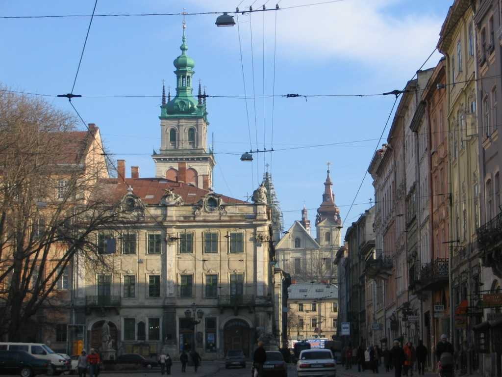
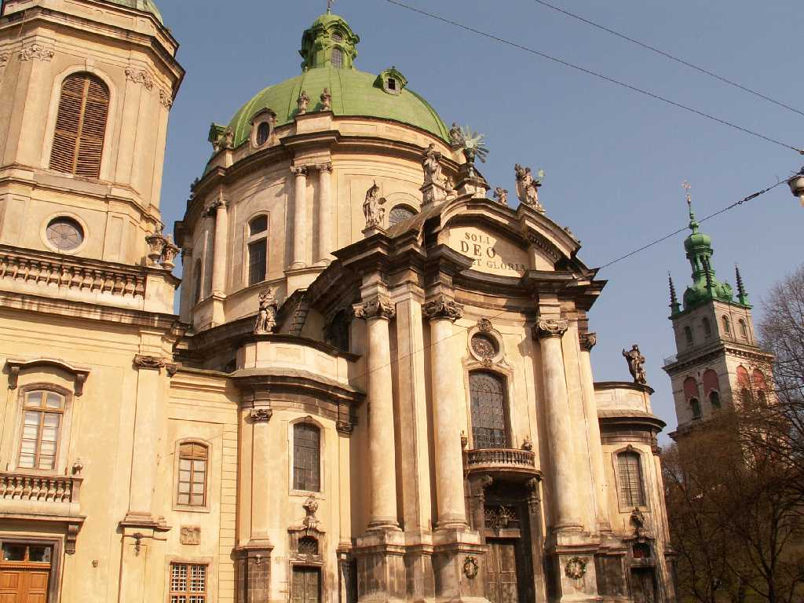

Rynok square Lviv
９世紀頃から街が形成されポーランド公国とキエフルーシの境の街で今はウクライナ領に位置しウクライナ文化の中心都市となっている 石畳の街路とトラムが行きかう １６世紀のルネッサンス様式建築物が建ち並ぶリノック広場が美しい

Lviv Dominical Casthaderal
ウクライナ正教会の総本山で正教会とカトリック教会の二面を持つ教会の創りとなっている 世界に１０あるの聖骸布の写しのひとつがここに祭られている